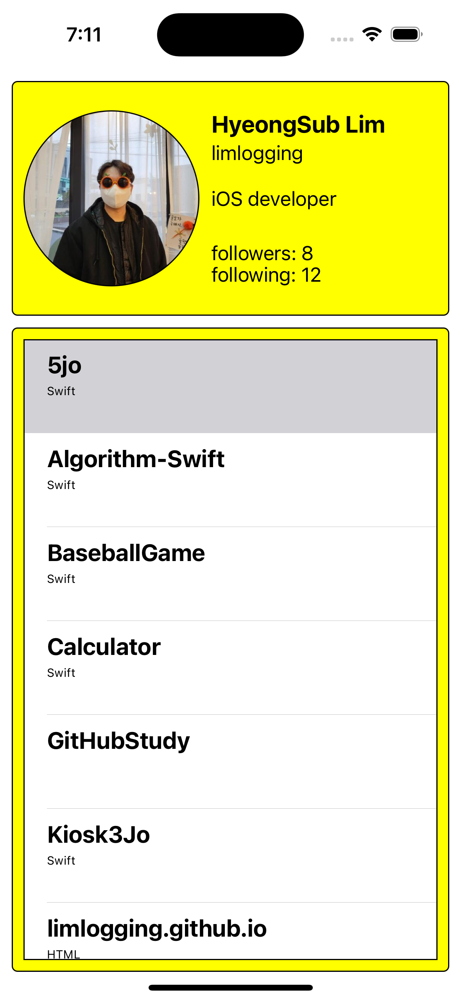

[내배캠] 챌린지반 과제 2차 제출 - GitHub App 만들기
깃허브 앱 만들기 개선해보기
- 이번 주차에 네트워크 작업과 관련해서 배웠습니다. 나중에 보니 구글 검색으로 알라모파이어로 어거지로 불러와서 구현은 됐는데 구조체에 Struct를 사용하지 않고 옛날 방식으로 데이터를 불러왔다는 것을 알았습니다.
- 배운 내용을 바탕으로 다시 개선해 보았습니다.
1차 제출 보기
튜터님 피드백
- Model에 있는 struct 2개에 Decodable을 적용해주세요.
- API에서 받아온 데이터를 Decoding 하여 객체로 만들어주세요.
- (responseJSON 대신 responseData 같은거를 사용하시면 됩니다)
- Pull to refresh는 모든 데이터를 다시 받아와서 테이블뷰를 그려주세요.
- 페이징처리를 해주세요.
- as! TableViewCell 대신 옵셔널 바인딩을 사용해주세요.
1. Model에 있는 struct 2개에 Decodable을 적용해주세요.
수정 전
GithubProfile
import Foundation
// GitHub 프로필 정보를 저장할 구조체
struct GithubProfile {
//var myImage: UIImage?
var myImage: URL //프로필 사진
var name: String //이름
var login: String //깃허브 ID
var followers: Int //팔로워
var following: Int //팔로잉
var repoCnt: Int //리포지토리 개수
}
GithubRepositories
import Foundation
// 리포지토리 정보를 저장할 구조체
struct GithubRepositories {
var name: String //리포지토리 이름
var htmlUrl: String //리포지토리 주소
var description: String //리포지토리 설명
var language: String //언어
}
수정 후
- Decodable을 추가하였습니다.
GithubProfile
import Foundation
// GitHub 프로필 정보를 저장할 구조체
struct GithubProfile: Decodable {
var login: String //깃허브 ID
var name: String //이름
var bio: String //bio
var avatarUrl: URL //프로필 사진
var followers: Int //팔로워
var following: Int //팔로잉
enum CodingKeys: String, CodingKey {
case login
case name
case bio
case followers
case following
case avatarUrl = "avatar_url"
}
}
GithubRepositories
import Foundation
// 리포지토리 정보를 저장할 구조체
struct GithubRepositories: Decodable {
var name: String //리포지토리 이름
var language: String? //언어
}
2, 3번 API에서 받아온 데이터를 Decoding 하여 객체로 만들어주세요. / responseData 사용
수정 전
깃허브에서 프로필 정보 가져오기
// MARK: - 깃허브에서 프로필 정보 가져오기
func getGithubProfile() {
AF.request(profileUrl).responseJSON { response in
switch response.result {
case.success(let value):
if let json = value as? [String: Any],
let name = json["name"] as? String,
let login = json["login"] as? String,
let followers = json["followers"] as? Int,
let following = json["following"] as? Int,
let repoCnt = json["public_repos"] as? Int,
let avatarURLString = json["avatar_url"] as? String,
let avatarURL = URL(string: avatarURLString) {
let profile = GithubProfile(myImage: avatarURL, name: name, login: login, followers: followers, following: following, repoCnt: repoCnt)
self.showProfileInfo(profile)
}
case .failure(let error):
print("error: \(error)")
}
}
}
// 구조체에서 데이터를 가져와 label 및 imageView에 보여주는 함수
func showProfileInfo(_ profile: GithubProfile) {
//SDWebImage를 사용하여 프로필 이미지 다운로드 및 출력
profileImageView.sd_setImage(with: profile.myImage, placeholderImage: nil, options: [], completed: nil)
profileName.text = profile.name // 이름 출력
profileLogin.text = profile.login // 로그인 출력
profileFollowers.text = "Followers: \(String(profile.followers))" //followers
profileFollowing.text = "Following: \(String(profile.following))" //following
self.repoCnt = profile.repoCnt
repositoriesTableView.reloadData() //최초 실행하면 numberOfRowsInSection를 먼저 실행하고 깃허브 데이터를 받아와서 row 수가 0임, row수를 깃허브 repo수 만큼 보이도록 새로고침 추가
}
깃허브에서 리포지토리 정보 가져오기
// MARK: - 깃허브에서 리포지토리 정보 가져오기
func getGithubRepositories() {
AF.request(repositoriesUrl).responseJSON { response in
switch response.result {
case.success(let value):
if let repositories = value as? [[String: Any]] {
for repo in repositories {
if let name = repo["name"] as? String,
let htmlUrl = repo["html_url"] as? String {
//description, language는 없거나 Null 값이 있어서 닐 코얼레싱 추가
let description = repo["description"] as? String ?? ""
let language = repo["language"] as? String ?? ""
//배열에 저장
self.repoArr.append(GithubRepositories(name: name, htmlUrl: htmlUrl, description: description, language: language))
}
}
}
case .failure(let error):
print("에러: \(error)")
}
}
}
수정 후
네트워크 작업을 전담할 파일 생성
- NetworkManager.swift 생성
import Foundation
import Alamofire
final class NetworkManager {
let url = "https://api.github.com/users/"
// MARK: - URLSession으로 깃허브 프로필 가져오기
func fetchUserProfile(userName: String, completionHandler: @escaping (Result<GithubProfile, Error>) -> Void) {
//1. url 구조체 생성
guard let url = URL(string: "\(self.url)\(userName)") else {
completionHandler(.failure(NSError(domain: "url 변환에 실패했어요.", code: 401)))
return
}
//2. request 설정
var request = URLRequest(url: url)
request.httpMethod = "GET"
//3. 작업 만들기
let task = URLSession.shared.dataTask(with: request) { data, response, error in
if let error {
completionHandler(.failure(error))
return
}
guard let data else {
completionHandler(.failure(NSError(domain: "Data가 없습니다.", code: 402)))
return
}
do {
let profile = try JSONDecoder().decode(GithubProfile.self, from: data)
//콜백함수로 데이터 전달
completionHandler(.success(profile))
} catch {
completionHandler(.failure(error))
}
}
//4. 작업시작
task.resume()
}
// MARK: - 알라모파이어로 리포지토리 정보 가져오기
func fetchUserRepositories(userName: String, page: Int, completionHandler: @escaping (Result<[GithubRepositories], Error>) -> Void) {
let url = "\(self.url)\(userName)/repos?page=\(page)"
AF.request(url).responseDecodable(of: [GithubRepositories].self) { response in
switch response.result {
case .success(let repositories):
completionHandler(.success(repositories))
case .failure(let error):
completionHandler(.failure(error))
}
}
}
}
깃허브에서 프로필 및 리포지토리 정보 가져오기
// MARK: - 깃허브 프로필 가져오기, 강한 순환 참조를 피하기 위해서 [weak self] 사용
networkManager.fetchUserProfile(userName: userName) { [weak self] result in
switch result {
case .success(let githubProfile):
self?.profile = githubProfile
DispatchQueue.main.async {
self?.profileName.text = githubProfile.name //이름
self?.profileLogin.text = githubProfile.login //ID
self?.profileBio.text = githubProfile.bio //BIO
self?.profileFollowers.text = "followers: \(githubProfile.followers)" //follwers
self?.profileFollowing.text = "following: \(githubProfile.following)" //follwing
self?.profileImageView.kf.setImage(with: githubProfile.avatarUrl) //프로필사진
self?.view.setNeedsDisplay()
}
case .failure(let error):
print(error.localizedDescription)
}
}
// MARK: - 깃허브 리포지토리 가져오기, 강한 순환 참조를 피하기 위해서 [weak self] 사용
networkManager.fetchUserRepositories(userName: userName, page: self.page) { [weak self] result in
switch result {
case .success(let repositories):
self?.repositories = repositories
DispatchQueue.main.async {
self?.repositoriesTableView.refreshControl?.endRefreshing() //새로고침 끝내기
self?.repositoriesTableView.reloadData()
}
case .failure(let error):
print(error.localizedDescription)
}
}
4. Pull to refresh는 모든 데이터를 다시 받아와서 테이블뷰를 그려주세요.
수정 전
// MARK: - viewDidLoad()
override func viewDidLoad() {
super.viewDidLoad()
// 다른 코드 생략
//Pull to refresh 추가
tableViewRefresh()
}
// MARK: - Pull to refresh 컨트롤 추가
func tableViewRefresh() {
let refreshControl = UIRefreshControl()
refreshControl.attributedTitle = NSAttributedString(string: "새로고침")
refreshControl.addTarget(self, action: #selector(refreshData), for: .valueChanged)
repositoriesTableView.refreshControl = refreshControl
}
// MARK: - pull to refresh 메서드
@objc func refreshData() {
DispatchQueue.main.asyncAfter(deadline: .now() + 1.0) {
// 테이블 뷰 리로드
self.repositoriesTableView.reloadData()
// UIRefreshControl 종료
self.repositoriesTableView.refreshControl?.endRefreshing()
}
}
수정 후
- 기존 테이블 뷰 리로드에서 네트워크를 통해 새로 받아오도록 수정
// MARK: - 테이블뷰 설정 func configureTableView() { //다른 코드 생략 let refreshControl = UIRefreshControl() refreshControl.attributedTitle = NSAttributedString(string: "새로고침") refreshControl.addTarget(self, action: #selector(refreshData), for: .valueChanged) repositoriesTableView.refreshControl = refreshControl } // MARK: - pull to refresh 메서드 @objc func refreshData() { configureData() // 2,3 번 부분을 함수로 만들어 불러오기 }
5. 페이징처리를 해주세요.
- 1차 제출때는 구현하지 못한 부분입니다.
TableViewDelegate에 willDisplay 함수 추가
extension ViewController: UITableViewDelegate {
//특정 셀이 화면에 나타나기 전에 실행 (셀이 화면에 나타나기 전에 수행되어야 하는 작업이 필요할때)
func tableView(_ tableView: UITableView, willDisplay cell: UITableViewCell, forRowAt indexPath: IndexPath) {
//셀의 마지막에 도착했을때 데이터 다시 로드
if indexPath.row == repositories.count - 1 {
loadMore()
}
}
}
leadMore 함수 추가
// MARK: - 페이징 처리
func loadMore() {
if isLoadingLast == true {
print("마지막 페이지까지 불러왔어요.")
return
}
page += 1
networkManager.fetchUserRepositories(userName: userName, page: page) { [weak self] result in
// self에 대한 약한 참조를 만들어 strong reference cycle을 방지합니다.
guard let self = self else { return } // self가 nil이라면 함수를 종료합니다.
switch result {
case .success(let repositories):
//api 호출결과가 비어있으면 마지막으로 인식
if repositories.isEmpty == true {
self.isLoadingLast = true //마지막 저장소 로딩
return
}
self.repositories = self.repositories + repositories //기존 배열에 새로 불러온 데이터 추가하기
//UI 다시 그리기는 메인큐
DispatchQueue.main.async {
self.repositoriesTableView.reloadData()
}
case .failure(let error):
print(error.localizedDescription)
}
}
}
6. as! TableViewCell 대신 옵셔널 바인딩을 사용해주세요.
수정 전
func tableView(_ tableView: UITableView, cellForRowAt indexPath: IndexPath) -> UITableViewCell {
let cell = tableView.dequeueReusableCell(withIdentifier: "CellId", for: indexPath) as! TableViewCell
//깃허브에서 데이터를 불러오기도 전에 cellForRowAt이 실행되어 추가
if repoArr.count != 0 {
cell.nameLabel.text = repoArr[indexPath.row].name
cell.descriptionLabel.text = repoArr[indexPath.row].description
cell.languageLabel.text = repoArr[indexPath.row].language
} else {
repositoriesTableView.reloadData()
}
return cell
}
수정 후
- guard let 사용
func tableView(_ tableView: UITableView, cellForRowAt indexPath: IndexPath) -> UITableViewCell { guard let cell = tableView.dequeueReusableCell(withIdentifier: "CellId", for: indexPath) as? TableViewCell else { return UITableViewCell() } let repositories = repositories[indexPath.row] cell.bind(repositories) return cell }
실행화면

마무리
- 구글에서 검색해서 구현한 이전 1차 제출보다 네트워크 작업 관련해서 한번 공부하고 다시 풀어보니 공부한 내용을 적용하면서 풀어볼 수 있었습니다.